직업상담사-2급 (2019-03-03 기출문제)
1과목: 직업상담학
1. Super가 제시한 흥미사정 기법에 해당하지 않는 것은?
- 표현된 흥미
- 선호된 흥미
- 조작된 흥미
- 조사된 흥미
(정답률: 74%)

2. 정신역동적 직업상담에서 Bordin이 제시한 진단범주가 아닌 것은?
- 의존성
- 자아 갈등
- 정보의 부족
- 개인적 흥미
(정답률: 71%)
3. 내담자가 빈 의자를 앞에 놓고 어떤 사람이 실제 앉아 있는 것처럼 상상하면서 이야기를 하는 치료기법을 사용하는 상담이론은?
- 게슈탈트 상담
- 현실요법적 상담
- 동양적 상담
- 역설적 상담
(정답률: 87%)
4. 사회인지적 직업상담이론의 기반이 되는 Bandura의 상호적 결정론의 세 가지 요인이 아닌 것은?
- 개인과 신체적 속성
- 모범이 되는 모델
- 외부 환경
- 외형적 행동
(정답률: 64%)
5. 직업상담의 초기면담을 마친 후에 상담사가 면담을 정리하기 위해 검토해야 할 상과 가장 거리가 먼 것은?
- 사전자료를 토대로 내렸던 내담자에 대한 결론은 얼마나 정확했는가?
- 상담에 대한 내담자의 기대와 상담사의 기대는 얼마나 일치했는가?
- 내담자에 대하여 어떤 점들을 추가적으로 평가해야할 것인가?
- 내담자에게 적절한 직업을 추천하였는가?
(정답률: 76%)
6. 상담의 비밀보장 원칙에 대한 예외사항이 아닌 것은?
- 상담사가 내담자의 정보를 학문적 목적에만 사용하려고 하는 경우
- 미성년 내담자의 학대를 받고 있다는 사실이 보고되는 경우
- 내담자가 타인의 생명을 위협할 가능성이 있다고 판단되는 경우
- 내담자가 자기의 생명을 위협할 가능성이 있다고 판단되는 경우
(정답률: 86%)
7. 행동주의 상담의 모델링 기법에 관한 설명으로 틀린 것은?
- 적응적 행동이 어떤 것인지 가르칠 수 있다.
- 적응적 행동을 실제로 행하도록 촉진할 수 있다.
- 내담자가 두려워하는 행동을 하는 모델을 관찰함으로써 불안이 감소될 수 있다.
- 문제행동에서 벗어나도록 둔감화를 적용할 수 있다.
(정답률: 58%)
8. 직업상담의 문제 유형에 대한 Crites의 분류 중 '부적응형'에 대한 설명으로 옳은 것은?
- 적성에 따라 직업을 선택했지만 그 직업에 흥미를 느끼지 못하는 사람
- 흥미를 느끼는 분야는 있지만 그 분야에 필요한 적성을 가지고 있지 못하는 사람
- 흥미나 적성의 유형이나 수준과는 상관없이 어떤 분야를 선택할지 결정하지 못하는 사람
- 흥미를 느끼는 분야도 없고 적성에 맞는 분야도 없는 사람
(정답률: 50%)
9. Parsons가 제안한 특성ㆍ요인 이론에 관한 설명으로 틀린 것은?
- 고도로 개별적이고 과학적인 방법을 통해 개인과 직업을 연결하는 것이 핵심이다.
- 사람들은 누구나 신뢰롭고 타당하게 측정될 수 있는 독특한 특성을 가지고 있다.
- 특성이란 숨어 있는 특징이나 원인이 아니라 기술적인 범주이다.
- 직업선택은 직접적인 인지과정이기 때문에 개인의 특성과 직업의 특성을 연결하는 것이 가능하다.
(정답률: 70%)
10. 구성주의 진로발달 이론의 진로양식면접에서 선호하는 직무와 근로환경을 파악하기 위한 질문으로 가장 적합한 것은?
- 중학교 때나 고등학교 때 좋아하는 교과목이 무엇이었나요?
- 좋아하는 책이나 영화에 대해 이야기 해주세요.
- 어떤 사람의 삶을 따라서 살고 싶은가요?
- 좋아하는 명언이나 좌우명이 있나요?
(정답률: 71%)
11. 직업상담의 기본 원리와 가장 거리가 먼 것은?
- 윤리적인 범위 내에서 상담을 전개하여야 한다.
- 산업구조변화, 직업정보, 훈련정보 등 변화하는 직업세계에 대한 이해를 토대로 이루어져야 한다.
- 각종 심리검사 결과를 기초로 합리적인 판단을 이끌어낼 수 있어야 하지만 심리검사에 대해 과잉의존해서는 안 된다.
- 개인의 진로 혹은 직업결정에 대한 상담으로 전개되어야 하며, 자칫 의사결정 능력에 대한 훈련으로 전환되지 않도록 유의한다.
(정답률: 80%)
12. 내담자가 수집한 직업목록의 내용이 실현불가능 할 때, 상담사의 개입 방안으로 옳지 않은 것은?
- 브레인스토밍 과정을 통해 내담자의 부적절한 직업목록 내용을 명확히 한다.
- 최종 의사결정은 내담자가 해야 함을 확실히 한다.
- 내담자가 그 직업들을 시도해본 후 어려움을 겪게 되면 개입한다.
- 객관적인 증거나 논리로 추출한 것에 대해서 대화해야 한다.
(정답률: 82%)
13. 직업상담사의 요건 중 '상담업무를 수행하는데 가급적 결함이 없는 성격을 갖춘 자' 대한 사례와 가장 거리가 먼 것은?
- 지나칠 정도의 동정심
- 순수한 이해심을 가진 신중한 태도
- 건설적인 냉철함
- 두려움이나 충격에 대한 공감적 이해력
(정답률: 83%)
14. 직업상담의 기법 중, 비지시적 상담 규칙과 가장 거리가 먼 것은?
- 상담자는 내담자와 논쟁해서는 안 된다.
- 상담사는 내담자에게 질문 또는 이야기를 해서는 안 된다.
- 상담사는 내담자에게 어떤 종류의 권위도 과시해서는 안 된다.
- 상담사는 인내심을 가지고 우호적으로, 그러나 지적으로는 비판적인 태도로 내담자의 말을 경청해야 한다.
(정답률: 78%)
15. 다음 설명에 해당하는 상담이론은?
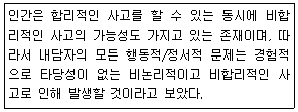
- 합리적 정서행동 상담
- 현실치료적 상담
- 형태주의 상담
- 정신분석적 상담
(정답률: 80%)
16. 생애주기에 관한 연구결과들의 시사점과 가장 거리가 먼 것은?
- 모든 연령수준별로 일에 대한 이해, 일을 수행하기 위한 훈련과 자격, 원하는 직업을 얻는 방법, 생활과 직업의 관계를 인식해야 한다.
- 10대에게는 직업에 필요한 적당한 기술과 훈련이 필요하다.
- 한 번 얻은 직업정보는 시간과 상황에 관계없이 계속 유지되어야 한다.
- 여성과 노인들을 위한 직업정보체계가 필요하다.
(정답률: 83%)
17. 진로시간전망을 측정하는 원형검사에서 시간차원 내 사건의 강도와 확장의 원리를 기초로 수행되는 차원은?
- 방향성
- 통합성
- 변별성
- 포괄성
(정답률: 64%)
18. 초기 상담과정에서 상담사가 수행해야 할 내용으로 옳지 않은 것은?
- 상담사의 개입을 시도한다.
- 상담과정에서 필요한 과제물을 부여한다.
- 조급하게 내담자에 대한 결론을 내리지 않는다.
- 상담과정과 역할에 대한 서로의 기대를 명확히 한다.
(정답률: 77%)
19. 상담 종결 단계에서 다루어야 할 사항이 아닌 것은?
- 상담 종결 단계에 대한 내담자의 준비도를 평가하고 상담을 통해 얻은 학습을 강화시킨다.
- 남아 있는 정서적 문제를 해결하고 내담자와 상담자 간의 의미 있고 밀접했던 관계를 적절하게 끝맺는다.
- 상담사와 내담자가 협력하여 앞으로 나아갈 방향과 상담목표를 설정하고 확인해 나간다.
- 학습의 전이를 극대화하고 내담자의 자기 신뢰 및 변화를 유지할 수 있는 자신감을 증가시킨다.
(정답률: 75%)
20. 다음 사례에서 면담 사정 시 사정단계에서 확인해야 하는 내용으로 가장 적합한 것은?
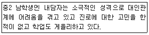
- 내담자의 잠재력, 내담자의 자기진단
- 인지적 명확성, 정신건강 문제, 내담자의 동기
- 내담자의 자기진단, 상담자의 정보제공
- 동기문제 해결, 상담자의 견해 수용
(정답률: 77%)
2과목: 직업심리학
21. 직무특성 양식 중 개인이 환경과의 상호작용에 있어 반응을 계속하는 시간의 길이는?
- 신속성
- 속도
- 인내심
- 리듬
(정답률: 66%)
22. Holland가 분류한 성격유형 중 기계, 도구에 관한 체계적인 조작활동을 좋아하나 사회적 기술이 부족한 유형은?
- 예술적 유형(A)
- 현실적 유형(R)
- 기업가적 유형(E)
- 관습적 유형(C)
(정답률: 83%)
23. 다음 중 Maslow의 욕구위계이론과 가장 유사성이 많은 직무동기이론은?
- 기대-유인가 이론
- Adams의 형평이론
- Locke의 목표설정이론
- Alderfer의 존재-관계-성장이론
(정답률: 67%)
24. Holland의 흥미이론에서 개인의 흥미 유형과 개인이 몸담고 있거나 소속되고자 하는 환경의 유형이 서로 부합되는 정도는?
- 일치성(concurrence)
- 일관성(consistency)
- 변별성(discrimination)
- 정체성(identity)
(정답률: 79%)
25. 조직에 영향을 미치는 직무 스트레스의 결과와 가장 거리가 먼 것은?
- 직무수행 감소
- 직무 불만족
- 상사의 부당한 지시
- 결근 및 이직
(정답률: 72%)
26. Gottfredson이 제시한 직업포부의 발달단계가 아닌 것은?
- 성역할 지향성
- 힘과 크기의 지향성
- 사회적 가치 지향성
- 직업 지향성
(정답률: 70%)
27. 다음 중 일반적인 직무분석의 3단계에 포함되지 않는 것은?
- 직업분석(occupational analysis)
- 직무분석(job analysis))
- 직업수준분석(job level analysis)
- 작업분석(task analysis)
(정답률: 61%)
28. 직업전환을 원하는 내담자를 상담할 때, 고려해야 할 사항과 가장 거리가 먼 것은?
- 나이와 건강을 고려해야 한다.
- 부모의 기대와 아동기 경험을 분석한다.
- 직업을 전환하는데 동기화가 되어 있는지 알아본다.
- 직업을 전환하는데 필요한 기술을 가지고 있는지 평가해야 한다.
(정답률: 82%)
29. 직무분석을 실시할 때 분석할 대상직업에 대한 자료가 부족하여 실시하는 최초분석법의 분석방법이 아닌 것은?
- 면담법
- 체험법
- 비교확인법
- 설문법
(정답률: 70%)
30. 직업발달을 탐색-구체화-선택-명료화-순응-개혁-통합의 직업정체감 형성과정으로 설명한 것은?
- Super의 발달이론
- Ginzberg의 발달이론
- Tiedeman과 O'Hara의 발달이론
- Gottfredson의 발달이론
(정답률: 68%)
31. Klumboltz의 사회학습 진로이론에서 삶에서 일어나는 우연한 일들을 자신의 진로에 유리하게 활용하는데 도움 되는 기술이 아닌 것은?
- 호기심(curiosity)
- 독립심(independece)
- 낙관성(optimism)
- 위험 감수(risk taking)
(정답률: 54%)
32. 신뢰도가 높은 검사의 특성으로 옳은 것은?
- 공부를 잘하는 학생이 못하는 학생보다 더 좋은 점수를 받는다.
- 검사점수들이 정상분포를 이룬다.
- 한 피검사자가 동일한 검사를 반복해서 받을 때 유사한 점수를 받는다.
- 검사 문항의 난이도가 낮은 것부터 높은 것까지 골고루 분포되어 있다.
(정답률: 75%)
33. 직업적성 검사의 측정에 대한 설명으로 옳은 것은?
- 개인이 맡은 특정 직무를 성공적으로 수행할 수 있는지를 측정한다.
- 일반적인 지적 능력을 알아내어 광범위한 분야에서 그 사람이 성공적으로 수행할 수 있는지를 측정한다.
- 직업과 관련된 흥미를 알아내어 직업에 관한 의사결정에 도움을 주기 위한 것이다.
- 개인이 가지고 있는 기질이라든지 성향 등을 측정하는 것으로 개인에게 습관적으로 나타날 수 있는 어떤 특징을 측정한다.
(정답률: 43%)
34. 문항분석에서 다음의 P는 무엇인가?
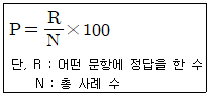
- 문항 난이도
- 문항 변별도
- 오답 능률도
- 문항 오답률
(정답률: 70%)
35. 승진을 하려면 지방근무를 해야만 하고, 서울근무를 계속하려면 승진기회를 잃는 경우에 겪는 갈등의 유형은?
- 접근-접근 갈등
- 회피-회피 갈등
- 접근-회피 갈등
- 이중접근 갈등
(정답률: 78%)
36. 다음은 무엇에 관한 설명인가?
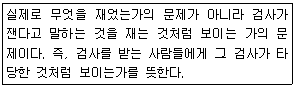
- 내용타당도(content validity)
- 준거관련 타당도(criterion-related validity)
- 예언 타당도(predictive validity)
- 안면 타당도(face validity))
(정답률: 67%)
37. Crites가 개발한 직업성숙도검사(CMI)에서 태도척도에 해당되지 않는 것은?
- 성실성
- 독립성
- 지향성
- 결정성
(정답률: 42%)
38. 심리검사의 표준화를 통해 통제하고자 하는 변인이 아닌 것은?
- 검사자 변인
- 피검자 변인
- 채점자 변인
- 실시상황 변인
(정답률: 54%)
39. 스트레스에 관한 설명으로 옳은 것은?
- 스트레스에 대한 일반적응징후는 경계, 저항, 탈진 단계로 진행된다.
- 1년간 생활변동 단위(life change unit)의 합이 90인 사람은 대단히 심한 스트레스를 겪는 상황이다.
- A유형의 사람은 B유형의 사람보다 스트레스에 더 인내력이 있다.
- 사회적 지지가 스트레스의 대처와 극복에 미치는 영향력은 거의 없다.
(정답률: 75%)
40. 신입사원이 조직에 쉽게 적응하도록 상사가 후견인이 되어 도와주는 경력개발 프로그램은?
- 종업지원 시스템
- 멘토십 시스템
- 경력지원 시스템
- 조기발탁 시스템
(정답률: 84%)
3과목: 직업정보론
41. 한국표준직업분류에서 대분류와 직능수준과의 관계로 틀린 것은?
- 관리자 - 제4직능 수준 혹은 제3직능 수준
- 사무 종사자 - 제2직능 수준 필요
- 판매 종사자 - 제2직능 수준 필요
- 군인 - 제1직능 수준 필요
(정답률: 79%)
42. 한국표준직업분류의 포괄적인 업무에 대한 직업분류 원칙에 해당되지 않는 것은?
- 주된 직무 우선 원칙
- 최상급 직능수준 우선 원칙
- 생산업무 우선 원칙
- 조사 시 최근의 직업 원칙
(정답률: 69%)
43. 한국표준산업분류의 적용 원칙으로 틀린 것은?
- 생산단위는 산출물뿐만 아니라 투입물과 생산공정 등을 함께 고려하여 그들의 활동을 가장 정확하게 설명된 항목에 분류해야 한다.
- 산업활동이 결합되어 있는 경우에는 그 활동단위의 주된 활동에 따라서 분류해야 한다.
- 수수료 또는 계약에 의하여 활동을 수행하는 단위는 동일한 산업활동을 자기계정과 자기책임 하에서 생산하는 단위와 같은 항목에 분류해야 한다.
- 공식적 생산물과 비공식적 생산물, 합법적 생산물과 불법적인 생산물을 달리 분류해야 한다.
(정답률: 72%)
44. 다음은 무엇에 관한 정의인가?
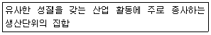
- 직업
- 산업
- 일(task)
- 요소작업
(정답률: 71%)
45. 실기능력이 중요하여 고용노동부령으로 정하는 필기시험이 면제되는 기능사 종목이 아닌 것은?
- 도화기능사
- 항공사진사진사
- 유리시공기능사
- 사진기능사
(정답률: 63%)
46. 다음 설명에 해당하는 직업훈련지원제도는?
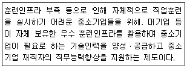
- 국가인적자원개발컨소시엄
- 사업주지원훈련
- 국가기간전략산업직종훈련
- 청년취업아카데미
(정답률: 67%)
47. 국가기술자격 기사등급의 응시 자격으로 틀린 것은?
- 응시하려는 종목이 속하는 동일 및 유사 직무분야에서 4년 이상 실무에 종사한 사람
- 동일 및 유사 직무분야의 기사 수준 기술훈련과정 이수자 또는 그 이수예정자
- 응시하려는 종목이 속하는 동일 및 유사 직무분야의 다른 종목의 기사 등급 이상의 자격을 취득한 사람
- 기능사 자격을 취득한 후 응시하려는 종목이 속하는 동일 및 유사 직무분야에서 2년 이상 실무에 종사한 사람
(정답률: 57%)
48. 구인ㆍ구직 통계가 다음과 같을 때 구인배수는?
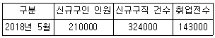
- 0.44
- 0.65
- 1.54
- 3.73
(정답률: 63%)
49. 한국표준산업분류의 통계단위는 생산활동과 장소의 동질성의 차이에 따라 다음과 같이 구분된다. ( )안에 알맞은 것은?
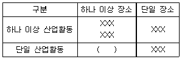
- 기업집단 단위
- 지역 단위
- 기업체 단위
- 활동유형 단위
(정답률: 76%)
50. 워크넷에서 제공하는 채용정보 중 기업형태별 검색에 해당하지 않는 것은?
- 벤처기업
- 외국계기업
- 환경친화기업
- 일학습병행기업
(정답률: 65%)
51. 워크넷(직업ㆍ진로)에서 제공되는 학과정보 중 공학계열에 해당하는 학과가 아닌 것은?
- 생명과학과
- 건축학과
- 안경과학과
- 해양공학과
(정답률: 66%)
52. 국가기술자격 서비스분야 종목 중 응시자격에 제한이 없는 것으로만 짝지어진 것은?
- 직업상담사2급 - 임상심리사2급 - 스포츠경영관리사
- 사회조사분석사2급 - 소비자전문상담사2급 - 텔레마케팅관리사
- 직업상담사2급 - 컨벤션기획사2급 - 국제의료관광코디네이터
- 컨벤션기획사2급 - 스포츠경영관리사 - 국제의료관광코디네이터
(정답률: 71%)
53. 질문지를 사용한 조사를 통해 직업정보를 수집하고자 한다. 질문지 문항 작성방법에 대한 설명으로 틀린 것은?
- 객관식 문항의 응답 항목은 상호배타적이어야 한다.
- 응답하기 쉬운 문항일수록 설문지의 앞에 배치하는 것이 좋다.
- 신뢰도 측정을 위해 짝(pair)으로 된 문항들은 함께 배치하는 것이 좋다.
- 이중(double-barreled)질문과 유도질문은 피하는 것이 좋다.
(정답률: 71%)
54. 청년내일채움공제 사업에 대한 설명으로 틀린 것은?
- 중소ㆍ중견기업에 정규직으로 취업한 청년들의 장기근속을 위하여 고용노동부와 중소벤처기업부가 공동으로 운영하는 사업이다.
- 청년ㆍ기업ㆍ정부가 공동으로 공제금을 적립하여 성과보상금 형태로 만기공제금을 지급한다.
- 온라인 신청방법은 중소기업진흥공단(sbcplan.or.kr) 참여신청 → 운영기관 승인 완료 후 워크넷 청약신청 순으로 이루어진다.
- 근속기간을 기준으로 2년형이 있다.
(정답률: 63%)
55. 다음 ( )에 알맞은 것은?(관련 규정 개정전 문제로 여기서는 기존 정답인 3번을 누르면 정답 처리됩니다. 자세한 내용은 해설을 참고하세요.)
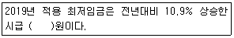
- 6470
- 7530
- 8350
- 10000
(정답률: 78%)
56. 직업정보를 전달하는 유형별 특징에 관한 다음 표의 ( )에 알맞은 것은?
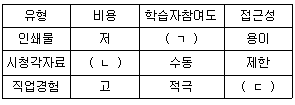
- ㄱ - 수동, ㄴ - 고, ㄷ - 제한
- ㄱ - 수동, ㄴ - 고, ㄷ - 적극
- ㄱ - 적극, ㄴ - 저, ㄷ - 제한
- ㄱ - 적극, ㄴ - 저, ㄷ - 적극
(정답률: 70%)
57. 공공직업정보의 일반적인 특성을 모두 고른 것은?
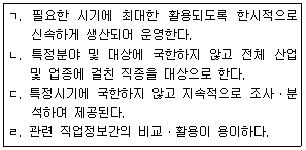
- ㄱ,ㄴ,ㄷ
- ㄱ,ㄴ,ㄹ
- ㄱ,ㄷ,ㄹ
- ㄴ,ㄷ,ㄹ
(정답률: 81%)
58. 워크넷에 대한 설명으로 틀린 것은?
- 워크넷은 개인구직자와 구인기업을 위한 취업지원 또는 채용지원 서비스를 제공할 뿐만 아니라, 고용센터 직업상담원이나 자자체 취업알선담당자 등의 취업알선업무 수행을 지원하기 위한 내부 취업알선시스템이기도 하다.
- 워크넷은 여성, 장년, 장애인, 청년 등 취약계층을 위한 우대채용정보를 제공한다.
- 워크넷은 구인ㆍ구직 관련 서비스 외에 직업 및 진로 정보도 제공한다.
- 워크넷은 정부에서 운영하는 취업정보사이트이기 때문에 고용센터 등 공공직업안정기관에서 생산한 구인ㆍ구직 정보만 제공한다.
(정답률: 77%)
59. 다음은 한국직업사전에서 해당 직업의 직무를 수행하는데 필요한 일반적인 정규교육 수준에 대한 설명이다. ( )에 알맞은 것은?
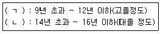
- ㄱ : 수준 2, ㄴ : 수준 4
- ㄱ : 수준 3, ㄴ : 수준 5
- ㄱ : 수준 4, ㄴ : 수준 6
- ㄱ : 수준 5, ㄴ : 수준 7
(정답률: 58%)
60. 한국직업전망의 직업별 정보 구성체계에 해당하지 않는 것은?
- 하는 일
- 근무환경
- 산업전망
- 관련 정보처
(정답률: 51%)
4과목: 노동시장론
61. 실업-결원곡선(Beveridge curve)에 관한 설명으로 틀린 것은?
- 종축에서는 결원수, 횡축에서는 실업자수를 표시한다.
- 원점에서 멀어질수록 구조적 실업자수가 증가함을 의미한다.
- 마찰적 실업과 구조적 실업을 구분하는 것이 기능하다.
- 현재의 실업자수에서 현재의 결원수를 뺀 것이 수요부족실업자수이다.
(정답률: 67%)
62. 유니언숍(union shop)에 대한 설명으로 옳은 것은?
- 조합원이 아닌 근로자는 채용 후 일정기간내에 조합에 가입해야 한다.
- 조합원이 아닌 자는 채용이 안된다.
- 노동조합의 노동공급원이 독점되어, 관련 노동시장에 강력한 영향을 미친다.
- 채용전후 근로자의 조합 가입이 완전히 자유롭다.
(정답률: 78%)
63. 완전경쟁하에서 노동의 수요곡선을 우하향하게 하는 조된 요인은 무엇인가?
- 노동의 한계생산력
- 노동의 가격
- 생산물의 가격
- 한계비용
(정답률: 50%)
64. 다음은 어떤 형태의 능률급인가?
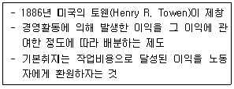
- 표준시간제
- 이익분배제
- 할시제
- 테일러제
(정답률: 81%)
65. 파업이론에 대한 설명으로 옳은 것으로 짝지어진 것은? 한다.
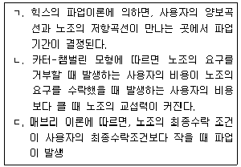
- ㄱ,ㄴ
- ㄴ,ㄷ
- ㄱ,ㄷ
- ㄱ,ㄴ,ㄷ
(정답률: 62%)
66. 노사관계의 3주체(tripartite)를 바르게 짝지은 것은?
- 노동자 - 사용자 - 정부
- 노동자 - 사용자 - 국회
- 노동자 - 사용자 - 정당
- 노동자 - 사용자 - 사회단체
(정답률: 80%)
67. 노동공급의 탄력성 값이 0인 경우 노동공급곡선의 형태는?
- 수평이다
- 수직이다
- 우상향이다
- 우하향이다
(정답률: 62%)
68. 다음 중 임금교섭 이전 노동조합의 전략을 바르게 짝지은 것은?
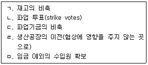
- ㄱ,ㄴ,ㄹ
- ㄱ,ㄷ,ㅁ
- ㄴ,ㄷ,ㄹ
- ㄴ,ㄷ,ㅁ
(정답률: 67%)
69. 다음은 근로자의 노동투입량, 시간당 임금 및 노동의 한계수입생산을 나타낸 것이다. 기업이 노동투입량을 5000시간에서 6000시간으로 증가시킬 때 노동의 한계비용은?
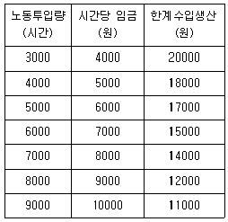
- 42000원
- 12000원
- 6000원
- 2800원
(정답률: 66%)
70. 다음 중 직종별 임금격차의 발생 원인과 가장 거리가 먼 것은?
- 비경쟁집단
- 보상적 임금격차
- 과도적 임금격차
- 직종간 자유로운 노동이동
(정답률: 66%)
71. 개인의 사용시간이 일정할 때 작업장까지의 통근시간 증가가 경제활동참가율과 총 근로시간에 미치는 효과로 옳은 것은?
- 경제활동참가율 증가, 총 근로시간 증가
- 경제활동참가율 감소, 총 근로시간 증가
- 경제활동참가율 증가, 총 근로시간 감소
- 경제활동참가율 감소, 총 근로시간 감소
(정답률: 59%)
72. 최저임금제도의 기본취지 및 기대효과와 가장 거리가 먼 것은?
- 저임금 노동자의 생활보호
- 산업평화 유지
- 유효수요의 억제
- 산업간ㆍ직업간 임금격차 축소
(정답률: 66%)
73. 노동시장이 초과공급을 경험하고 있을 때 나타나는 현상은?
- 임금이 하락압력을 받는다.
- 임금상승으로 공급량은 증가한다.
- 최종 산출물가격은 상승한다.
- 노동에 대한 수요는 감소한다.
(정답률: 65%)
74. 어느 국가의 생산가능인구의 구성비가 다음과 같을 때 이 국가의 실업률은?
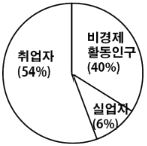
- 6.0%
- 10.0%
- 11.1%
- 13.2%
(정답률: 73%)
75. 실업률과 물가상승률간 역의 상관관계를 나타내는 곡선은?
- 래퍼곡선
- 필립스곡선
- 로렌즈곡선
- 테일러곡선
(정답률: 76%)
76. 다음 중 직무급 임금체계에 관한 설명으로 가장 적합한 것은?
- 정기승급에 의한 생활안정으로 근로자의 기업에 대한 귀속의식을 고양시킨다.
- 기업풍토, 업무내용 등에서 보수성이 강한 기업에 적합하다.
- 근로자의 능력을 직능고과의 평가결과에 따라 임금을 결정한다.
- 노동의 양뿐만 아니라 노동의 질을 동시에 평가하는 임금결정방식이다.
(정답률: 52%)
77. 직업이나 직종의 여하를 불문하고 동일산업에 종사하는 노동자가 조직하는 노동조합의 형태는?
- 직업별 노동조합
- 산업별 노동조합
- 기업별 노동조합
- 일반 노동조합
(정답률: 73%)
78. 노동수요의 탄력성에 대한 설명으로 틀린 것은?
- 생산물에 대한 수요가 탄력적일수록 노동수요는 더욱 비탄력적이다.
- 총생산비 중 노동비용이 차지하는 비중이 클수록 노동수요는 더 탄력적이 된다.
- 노동을 다른 생산요소로 대체할 가능성이 낮으면 노동수요는 더 비탄력적이다.
- 노동 이외의 생산요소의 공급탄력성이 클수록 노동수요는 더 탄력적이 된다.
(정답률: 62%)
79. 다음 중 사회적 비용이 가장 적은 실업은?
- 마찰적 실업
- 경기적 실업
- 구조적 실업
- 기술적 실업
(정답률: 73%)
80. 인적자본론의 노동이동에 관한 설명으로 틀린 것은?
- 임금률이 높을수록 해고율은 높다.
- 사직률과 해고율은 경기변동에 따라 상반되는 관련성을 갖고 있다.
- 사직률과 해고율은 기업특수적 인적자본과 음(-)의 상관관계를 갖는다.
- 인적자본론에서는 장기근속자일수록 기업특수적 인적자본량이 많아져 해고율이 낮아진다고 주장한다.
(정답률: 56%)
5과목: 노동관계법규
81. 근로기준법령상 평균임금 계산에서 제외되는 기간이 아닌 것은?
- 사용자의 귀책사유로 휴업한 기간
- 출산전후휴가기간
- 남성근로자가 신생아의 양육을 위하여 육아휴직한 기간
- 병역의무 이행을 위하여 유급으로 휴직한 기간
(정답률: 58%)
82. 직업안정법상 근로자의 모집 및 근로자공급사업에 대한 설명으로 틀린 것은?
- 근로자를 고용하려는 자는 광고, 문서 또는 정보통신망 등 다양한 매체를 활용하여 자유롭게 근로자를 모집할 수 있다.
- 누구든지 국외에 취업할 근로자를 모집한 경우에는 고용노동부장관에게 신고하여야 한다.
- 국내 근로자공급사업의 경우 그 사업의 허가를 받을 수 있는 자는 ＜노동조합 및 노동관계조정법＞에 따른 노동조합이다.
- 근로자공급사업에는 ＜파견근로자보호 등에 관한 법률＞에 따른 근로자파견사업을 포함한다.
(정답률: 51%)
83. 근로자직업능력 개발법상 직업능력개발훈련의 기본원칙에 대한 설명으로 틀린 것은?
- 직업능력개발훈련은 정부 주도로 노사의 참여와 협력을 바탕으로 실시되어야 한다.
- 직업능력개발훈련은 근로자 개인의 희망ㆍ적성ㆍ능력에 맞게 근로자의 생애에 결쳐 체계적으로 실시되어야 한다.
- 직업능력개발훈련은 근로자의 성별, 연령, 신체적 조건, 고용형태, 신앙 또는 사회적 신분 등에 따라 차별하여 실시되어서는 아니 된다.
- 직업능력개발훈련은 근로자의 직무능력과 고용가능성을 높일 수 있도록 지역ㆍ산업현장의 수요가 반영되어야 한다.
(정답률: 65%)
84. 남녀고용평등과 일ㆍ가정 양립 지원에 관한 법률의 목적으로 명시되어 있지 않은 것은?
- 여성 고용촉진
- 가사노동 가치의 존중
- 모성 보호 촉진
- 고용에서 남녀의 평등한 기화와 대우 보장
(정답률: 65%)
85. 근로기준법상 경영상 이유에 의한 해고에 대한 설명으로 틀린 것은?
- 사용자가 경영상 이유에 의하여 근로자를 해고하려면 긴박한 경영상의 필요가 있어야 한다.
- 사용자는 해고를 피하기 위한 노력을 다하여야 하며, 합리적이고 공정한 해고의 기준을 정하고 이에 따라 대상자를 선정하여야 한다.
- 사용자는 해고를 피하기 위한 방법과 해고의 기준 등에 관하여 그 사업 또는 사업장에 근로자의 과반수로 조직된 노동조합이 있는 경우에는 그 노동조합에 해고를 하려는 날의 50일 전까지 통보하고 성실하게 협의하여야 한다.
- 사용자는 대통령령으로 정하는 일정한 규모 이상의 인원을 해고하려면 고용노동부장관의 승인을 얻어야 한다.
(정답률: 53%)
86. 다음 중 헌법상 보장된 쟁의행위로 볼 수 없는 것은?
- 파업
- 태업
- 직장폐쇄
- 보이콧
(정답률: 67%)
87. 다음 ( )에 알맞은 것은?
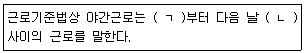
- ㄱ : 오후 8시, ㄴ : 오전 4시
- ㄱ : 오후 10시, ㄴ : 오전 6시
- ㄱ : 오후 12시, ㄴ : 오전 6시
- ㄱ : 오후 6시, ㄴ : 오전 4시
(정답률: 77%)
88. 근로자직업능력 개발법상 훈련계약에 관한 설명으로 틀린 것은?
- 사업주와 직업능력개발훈련을 받으려는 근로자는 직업능력개발훈련에 따른 권리ㆍ의무 등에 관하여 훈련계약을 체결하여야 한다.
- 기준근로시간 외 훈련시간에 대하여는 생산시설을 이용하거나 근무장소에서 하는 직업능력개발훈련을 제외하고는 연장근로와 야간근로에 해당하는 임금을 지급하지 아니할 수 있다.
- 훈련계약을 체결할 때에는 해당 직업능력개발훈련을 받는 사람이 직업능력개발훈련을 이수한 후에 사업주가 정하는 업무에 일정 기간 종사하도록 할 수 있다. 이 경우 그 기간은 5년 이내로 하되, 직업능력개발훈련기간의 3배를 초과할 수 없다.
- 훈련계약을 체결하지 아니한 경우에 고용근로자가 받은 직업능력개발훈련에 대해서는 그 근로자가 근로를 제공한 것으로 본다.
(정답률: 38%)
89. 남녀고용평등과 일ㆍ가정 양립 지원에 관한 법률상 육아휴직에 관한 설명으로 틀린 것은?
- 육아휴직기간은 1년 이내로 한다.
- 육아휴직기간은 근속기간에 포함하지 아니한다.
- 기간제근로자의 육아휴직 기간은 ＜기간제 및 단시간근로자 보호 등에 관한 법률＞에 따른 사용기간에 산입하지 않는다.
- 사업주는 업무 또는 같은 수준의 임금을 지급하는 직무에 복귀시켜야 한다.
(정답률: 76%)
90. 헌법에 명시된 노동기본권으로만 짝지어진 것은?
- 근로권, 단결권, 단체교섭권, 단체행동권
- 근로권, 노사공동결정권, 단체교섭권, 단체행동권
- 근로권, 단결권, 경영참가권, 단체행동권
- 근로의 의무, 단결권, 단체교섭권, 이익균점권
(정답률: 80%)
91. 남녀고용과 일ㆍ가정 양립 지원에 관한 법령상 직장 내 성희롱 예방 교육에 대한 설명으로 틀린 것은?
- 사업주는 연 1회 이상 직장 내 성희롱 예방을 위한 교육을 하여야 한다.
- 성희롱 예방교육에는 관련 법령, 직장 내 성희롱 예방 시의 처리절차와 조치기준, 피해 근로자의 고충상담 및 구제절차 등이 포함되어야 한다.
- 사업주 및 근로자 모두가 남성 또는 여성 중 어느 한 성으로 구성된 사업장은 성희롱 예방 교육을 하지 않아도 상관없다.
- 단순히 교육자료 등을 배포ㆍ제시하거나 게시판에 공지하는 데 그치는 등 근로자에게 교육 내용이 제대로 전달되었는지 확인하기 곤란한 경우에는 예방 교육을 한 것으로 보지 아니한다.
(정답률: 79%)
92. 고용정책 기본법령상 고용재난지역에 대한 행정상ㆍ재정상ㆍ금융상의 특별지원 내용을 모두 고른 것은?
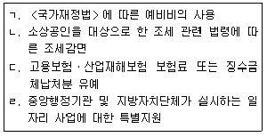
- ㄱ,ㄴ,ㄷ
- ㄱ,ㄷ,ㄹ
- ㄴ,ㄹ
- ㄱ,ㄴ,ㄷ,ㄹ
(정답률: 75%)
93. 다음 ( )안에 알맞은 것은?
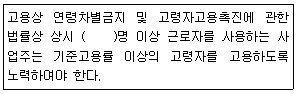
- 50
- 100
- 200
- 300
(정답률: 77%)
94. 고용보험법상 피보험자격의 취득일 및 사실일에 관한 설명으로 옳은 것은?
- 피보험자는 고용보험법이 적용되는 사업에 고용된 날의 다음날에 피보험자격을 취득한다.
- 적용 제외 근로자였던 자가 고용보험법의 적용을 받게 된 경우에는 그 적용을 받게 된 날의 다음날에 피보험자격을 취득한 것으로 본다.
- 피보험자가 사망한 경우에는 사망한 날의 다음날에 피보험자격을 상실한다.
- 보험관계가 소멸한 경우에는 그 보험관계가 소멸한 날의 다음날에 피보험자격을 상실한다.
(정답률: 62%)
95. 다음 ( )안에 알맞은 것은?
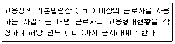
- ㄱ : 100명, ㄴ : 3월 31일
- ㄱ : 100명, ㄴ : 4월 30일
- ㄱ : 300명, ㄴ : 3월 31일
- ㄱ : 300명, ㄴ : 4월 30일
(정답률: 61%)
96. 다음 ( )안에 알맞은 것은?
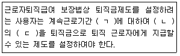
- ㄱ : 2년, ㄴ : 45일분 이상, ㄷ : 평균월급
- ㄱ : 1년, ㄴ : 15일분 이상, ㄷ : 통상월급
- ㄱ : 1년, ㄴ : 30일분 이상, ㄷ : 평균월급
- ㄱ : 2년, ㄴ : 60일분 이상, ㄷ : 통상월급
(정답률: 74%)
97. 다음 사례에서 구직급여의 소정 급여일수는?(관련 규정 개정전 문제로 여기서는 기존 정답인 4번을 누르면 정답 처리됩니다. 자세한 내용은 해설을 참고하세요.)
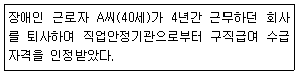
- 90일
- 120일
- 150일
- 180일
(정답률: 69%)
98. 직언안전법상 고용서비스 우수기관 인증에 대한 설명으로 틀린 것은?
- 고용노동부장관은 고용서비스 우수시관 인증업무를 대통령령으로 정하는 전문기관에 위탁할 수 있다.
- 고용서비스 우수기관으로 인증을 받은 자가 인증의 유효기간이 지나기 전에 다시 인증을 받으려면 직업안정기관의 장에게 재인증을 신청하여야 한다.
- 고용노동부장관은 고용서비스 우수기관으로 인증을 받은 자가 정당한 사유 없이 1년 이상 계속 사업 실적이 없는 경우 인증을 취소할 수 있다.
- 고용서비스 우수기관 인증의 유효기간은 인증일부터 3년으로 한다.
(정답률: 45%)
99. 근로자직업능력 개발법령상 직업능력개발훈련교사의 양성을 위한 훈련과정 구분에 해당하지않는 것은?
- 양성훈련과정
- 향상훈련과정
- 전직훈련과정
- 교직훈련과정
(정답률: 50%)
100. 고용상 연령차별금지 및 고령자고용촉진에관한 법률상 고령자 고용촉진 기본계획에 대한 설명으로 틀린 것은?
- 고용노동부장관은 관계 중앙기관의 장과 협의하여 5년마다 수립하여야 한다.
- 고령자의 직업능력개발에 관한 사항이 포함되어야 한다.
- 고용노동부장관은 기본계획을 수립할 때에는 국회 소관 상임위원회의 심의를 거쳐야 한다.
- 고용노동부장관은 필요하다고 인정하면 관계 행정기관 또는 공공기관의 장에게 기본계획의 수립에 필요한 자료의 제출을 요청할 수 있다.
(정답률: 70%)
"표현된 흥미"는 사람들이 직접 표현한 흥미를 의미하며, "선호된 흥미"는 사람들이 선호하는 흥미를 의미합니다. "조작된 흥미"는 외부적인 요인에 의해 인위적으로 만들어진 흥미를 의미합니다.
하지만 "조사된 흥미"는 어떤 주제에 대해 조사를 통해 얻은 정보나 결과를 의미하는 것으로, 흥미사정 기법 중 하나가 아닙니다.